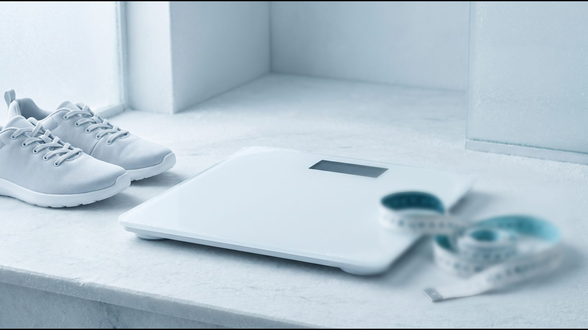

Плато на Ozempic® и Mounjaro®: почему вес перестает снижаться
Почему вес стоит на терапии: короткий ответ
О плато на Ozempic® (семаглутид) и Mounjaro® (тирзепатид) известно из исследований семаглутида 2,4 мг (доза Wegovy®) и тирзепатида: средний вес снижался месяцами, а затем стабилизировался. На семаглутиде 2,4 мг это происходило примерно через 60–68 недель, то есть больше чем через год; для тирзепатида есть только post-hoc анализ с собственным определением плато, который не оценивал период до 24-й недели. Авторы этого анализа объясняют плато как переход к новому энергетическому балансу и отмечают, что его часто ошибочно принимают за потерю эффекта. Для доз Ozempic® отдельных данных нет, поэтому дальнейшие шаги решают с врачом.
Когда наступает плато в исследованиях
Семаглутид и тирзепатид относятся к препаратам GLP-1, которые действуют на рецепторы гормона, влияющего на аппетит и сахар крови (тирзепатид еще и на рецепторы GIP). Для семаглутида 2,4 мг есть две формулировки недели плато. Для тирзепатида ее не называют ни инструкции EMA и FDA, ни краткое изложение SURMOUNT-1 в NEJM; есть только post-hoc анализ с собственным определением (Horn, Clin Obes, 2025).
| Препарат и исследование | Как определяли плато | Когда наступило |
|---|---|---|
| Семаглутид 2,4 мг, STEP 1 и STEP 2 (68 недель) | по кривой среднего веса; оценка авторов STEP 5 | примерно на 60-й неделе |
| Семаглутид 2,4 мг, STEP 5 (104 недели) | по кривой среднего веса | после примерно 60-й недели (авторы) или после 68-й (инструкция Wegovy® от EMA); дальше вес держался до 104-й недели |
| Тирзепатид 5–15 мг, SURMOUNT-1 (72 недели), post-hoc анализ Horn 2025 | изменение веса меньше 5 % за 12 недель и во всех следующих 12-недельных периодах; первый интервал оценки 24–36 недель; только 1438 участников, которые получили не меньше 75 % доз, не снижали дозу и потеряли ≥5 % | медиана 24,3 недели при избыточном весе, 26,0 при ожирении I степени, 36,1 при II и III степени; к 72-й неделе плато достигли 88–90 % проанализированных |
| Ozempic® 0,5–1 мг, диабет 2 типа | отдельного анализа нет | в рассмотренных источниках не описано |
Медиана здесь означает, что у половины проанализированных участников плато зафиксировали на этой неделе или раньше. Первый интервал оценки начинался с 24-й недели, сразу после 20 недель повышения дозы, так что раньше плато в этом анализе зафиксировать не могли. Сравнивать строки таблицы между собой нельзя: для семаглутида речь о моменте, когда кривая среднего веса группы становится пологой, а в анализе тирзепатида плато допускает изменение до 5 % за 12 недель, то есть вес еще может медленно снижаться. Поэтому вывод «на тирзепатиде плато наступает раньше» из этих данных не следует.
Более позднее плато обычно означало большую потерю. Среди проанализированных участников SURMOUNT-1 в группе с ранним плато средняя потеря к этому моменту составляла 12,1 %, в группе с промежуточным 24,3 %.
Почему вес перестает снижаться
Авторы анализа плато в SURMOUNT (Clin Obes, 2025), ссылаясь на другие исследования, называют два процесса. Первый — гормональная адаптация: после похудения растет уровень грелина, гормона голода, и снижаются гормоны сытости. Второй — метаболическая адаптация: организм тратит меньше энергии, меняется потребность в энергии в покое. В самих исследованиях SURMOUNT эти показатели не измеряли.
Пока человек худеет, он получает с едой меньше энергии, чем тратит. Плато те же авторы описывают как переход от такого дефицита к равновесию, когда поступление и расход энергии сравниваются. Плато бывает и без лекарств; причины и проверки для этой ситуации собраны в статье Вес стоит на месте: 8 причин.
По объяснению авторов анализа SURMOUNT, плато часто ошибочно воспринимают как конец пользы от лечения или даже как потерю эффекта. При этом они отмечают, что у части людей вес может начать возвращаться вскоре после самой низкой точки. Участники STEP 1 (семаглутид 2,4 мг), у которых средний вес вышел на плато около 60-й недели, после отмены на 68-й неделе за год вернули две трети потерянного, а на длительном лечении вес в среднем держался: до 104-й недели в STEP 5 и до 176-й недели среди участников с предиабетом в трехлетнем SURMOUNT-1.

Плато или слабый эффект: что обсудить с врачом
Плато после заметного похудения и отсутствие эффекта с самого начала — разные ситуации. Ответ на лечение руководства Endocrine Society и NICE оценивают через 3–6 месяцев с порогом 5 % исходного веса; эти правила и возможные причины разобраны в статье Почему не худеете на Ozempic® или Mounjaro®.
Если вес стоит несколько недель после заметного похудения, с врачом полезно обсудить:
- динамику веса и окружности талии за последние 12 недель: именно такой интервал использовали в анализе плато SURMOUNT-1;
- текущую дозу и является ли она уже поддерживающей; для Ozempic® украинская инструкция устанавливает максимум 1 мг в неделю и связывает повышение дозы с контролем сахара;
- пропущенные или перенесенные инъекции за последние недели;
- новые лекарства, болезни, изменения в питании и активности;
- показатели, кроме веса: давление, глюкозу, липиды, а по возможности состав тела методом биоимпеданса (BIA) или DXA;
- силовые тренировки и белок: совместное руководство ACLM, ASN, OMA и TOS (2025) советует сочетать терапию GLP-1 с силовыми тренировками не реже 3 раз в неделю, детали в статье Как сохранить мышцы на Ozempic® и Mounjaro®;
- цель на следующий этап: худеть дальше или удерживать достигнутое; по инструкциям EMA для Mounjaro® и Wegovy® удержание веса тоже входит в показание.
[КОММЕНТАРИЙ ВРАЧА: что врач делает, когда вес на терапии стоит несколько недель подряд: какие показатели проверяет и когда рассматривает смену дозы или препарата]
Чего не делать самостоятельно на плато
- Не повышать дозу и не колоть чаще. Повышение дозы и интервалы между инъекциями четко ограничены инструкцией EMA для тирзепатида и украинской инструкцией Ozempic®; дозу меняет только врач с учетом эффекта и переносимости. Как устроена схема, описано в статье Как колоть Mounjaro®.
- Не урезать еду и жидкость еще сильнее. Инструкция EMA для тирзепатида и украинская инструкция Ozempic® предупреждают, что тошнота, рвота и диарея могут вызвать обезвоживание и ухудшение функции почек. Как питаться, чтобы хватало белка и жидкости, разобрано в статье Питание на Mounjaro® и Ozempic®.
- Не добавлять «жиросжигатели» и добавки для похудения. FDA предупреждает, что многие такие продукты могут содержать скрытые лекарственные вещества, например сибутрамин, отозванный с рынка из соображений безопасности, потому что он может существенно повышать давление и пульс. Систематический обзор 315 рандомизированных исследований (Obesity, 2021) пришел к выводу, что качественных доказательств эффективности добавок для похудения мало.
- Не делать перерывов, чтобы «перезапустить» эффект. Исследования отмены показали обратное: после замены препарата на плацебо вес возвращался. Подробнее в статье Вес после отмены Ozempic® и Mounjaro®.
- Не менять препарат самостоятельно. Переход с семаглутида на тирзепатид или наоборот решает врач с учетом показаний, переносимости и цели лечения.
Частые вопросы
Через сколько недель наступает плато на Ozempic® или Mounjaro®?
На семаглутиде 2,4 мг (доза Wegovy®) средний вес стабилизировался примерно через 60–68 недель (STEP 5, инструкция Wegovy® от EMA). Для тирзепатида есть только post-hoc анализ SURMOUNT-1: среди участников, которые получали препарат по схеме, медиана составила 24–36 недель в зависимости от индекса массы тела (ИМТ), но раньше 24-й недели плато там не оценивали. Для доз Ozempic® 0,5–1 мг таких данных нет, а у отдельного человека сроки могут быть другими.
Значит ли плато, что препарат перестал действовать?
Не обязательно. Авторы анализа SURMOUNT пишут, что плато часто ошибочно принимают за потерю эффекта, а исследования отмены показывают, что без препарата вес возвращался. На длительном лечении достигнутый вес в среднем держался до 104 недель в STEP 5 (семаглутид 2,4 мг) и до 176 недель среди участников с предиабетом в SURMOUNT-1.
Нужно ли повысить дозу, если вес стоит?
Не обязательно, и самостоятельно этого не делают. В SURMOUNT-1 на более высоких дозах тирзепатида потеря в среднем была больше, но и лечение из-за нежелательных явлений прекращали чаще; для Ozempic® в Украине 1 мг в неделю — максимальная доза. Врач взвешивает эффект, переносимость и цель лечения.
Что делать, если вес не снижается с первых недель?
Это не плато, а вопрос об ответе на лечение. Руководства оценивают его через 3–6 месяцев и считают недостаточной потерю меньше 5 % исходного веса. Такую ситуацию обсуждают с врачом; возможные причины описаны в статье о слабом эффекте GLP-1-терапии.
Что дальше
Если вес стоит несколько недель, запишите динамику веса, талии и самочувствия и обсудите ее с эндокринологом: врач оценит, плато ли это, и предложит следующий шаг. В клинике врач ведет курс и корректирует дозу по результатам регулярного мониторинга веса и самочувствия.
Источники
- Garvey WT et al. Two-year effects of semaglutide in adults with overweight or obesity: the STEP 5 trial. Nat Med, 2022;28(10):2083–2091. https://doi.org/10.1038/s41591-022-02026-4
- Wegovy: EPAR Product Information. European Medicines Agency. https://www.ema.europa.eu/en/documents/product-information/wegovy-epar-product-information_en.pdf
- Horn DB et al. Time to weight plateau with tirzepatide treatment in the SURMOUNT-1 and SURMOUNT-4 clinical trials. Clin Obes, 2025. https://doi.org/10.1111/cob.12734
- Jastreboff AM et al. Tirzepatide Once Weekly for the Treatment of Obesity (SURMOUNT-1). N Engl J Med, 2022;387:205–216. https://doi.org/10.1056/NEJMoa2206038
- Jastreboff AM et al. Tirzepatide for Obesity Treatment and Diabetes Prevention. N Engl J Med, 2025;392:958–971. https://doi.org/10.1056/NEJMoa2410819
- Wilding JPH et al. Weight regain and cardiometabolic effects after withdrawal of semaglutide: The STEP 1 trial extension. Diabetes Obes Metab, 2022;24(8):1553–1564. https://doi.org/10.1111/dom.14725
- Mounjaro: EPAR Product Information. European Medicines Agency. https://www.ema.europa.eu/en/documents/product-information/mounjaro-epar-product-information_en.pdf
- Інструкція для медичного застосування лікарського засобу ОЗЕМПІК®, РП UA/19176/01/01. МОЗ України, Державний реєстр лікарських засобів. http://www.drlz.com.ua/ibp/ddsite.nsf/all/shlz1?opendocument&stype=BA8B8927450EC695C2258E370023202D
- EMA. Meeting highlights from the Pharmacovigilance Risk Assessment Committee (PRAC) 2–5 June 2025 (NAION). https://www.ema.europa.eu/en/news/meeting-highlights-pharmacovigilance-risk-assessment-committee-prac-2-5-june-2025
- NICE. Overweight and obesity management (NG246), 2025. https://www.nice.org.uk/guidance/ng246/chapter/Medicines-and-surgery
- Apovian CM et al. Pharmacological management of obesity: an Endocrine Society clinical practice guideline. J Clin Endocrinol Metab, 2015;100(2):342–362. https://pubmed.ncbi.nlm.nih.gov/25590212/
- Mozaffarian D et al. Nutritional priorities to support GLP-1 therapy for obesity: a joint Advisory from ACLM, ASN, OMA and TOS. Am J Clin Nutr, 2025;122(1):344–367. https://pubmed.ncbi.nlm.nih.gov/40450457/
- FDA. Weight Loss Product Notifications. https://www.fda.gov/drugs/medication-health-fraud-notifications/weight-loss-product-notifications
- FDA. Public Notification: Detoxi Slim contains hidden drug ingredient, 2026. https://www.fda.gov/drugs/medication-health-fraud-notifications/public-notification-detoxi-slim-contains-hidden-drug-ingredient
- Batsis JA et al. A Systematic Review of Dietary Supplements and Alternative Therapies for Weight Loss. Obesity, 2021;29(7):1102–1113. https://pubmed.ncbi.nlm.nih.gov/34159755/
Материал носит информационный характер и не заменяет консультацию врача. Препараты назначает врач после консультации.
Читайте также